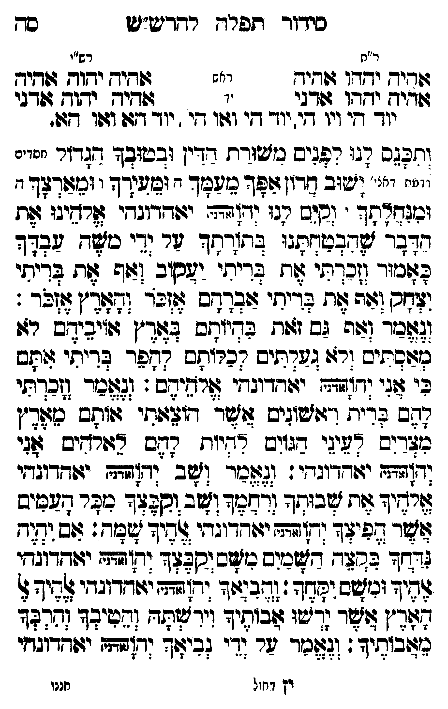

Neue Klartextfassung
=== טבלה === [ר"ת — ראש] אהיה יהוה אהיה [ר"ת — יד] אהיה יהוה אדני [רש"י — ראש] אהיה יהוה אהיה [רש"י — יד] אהיה יהוה אדני יוד הי ויו הי, יוד הי ואו הי, יוד הא ואו הא. === סוף טבלה === ותכנס לנו לפנים משורת הדין ובטובך הגדול [חסדים ורחמי דאי'] ישוב חרון אפך מעמך ומעירך ומארצך ומנחלתך: וקים לנו יהוה (אדני) אלהינו את הדבר שהבטחתנו בתורתך על ידי משה עבדך כאמור וזכרתי את בריתי יעקוב ואף את בריתי יצחק ואף את בריתי אברהם אזכר והארץ אזכר: ונאמר ואף גם זאת בהיותם בארץ איביהם לא מאסתים ולא געלתים לכלותם להפר בריתי אתם כי אני יהוה (אדני) אלהיהם: ונאמר וזכרתי להם ברית ראשנים אשר הוצאתי אותם מארץ מצרים לעיני הגוים להיות להם לאלהים אני יהוה (אדני): ונאמר ושב יהוה (אדני) אלהיך את שבותך ורחמך ושב וקבצך מכל העמים אשר הפיצך יהוה (אדני) אלהיך שמה: אם יהיה נדחך בקצה השמים משם יקבצך יהוה (אדני) אלהיך ומשם יקחך: והביאך יהוה (אדני) אלהיך אל הארץ אשר ירשו אבתיך וירשתה והיטבך והרבך מאבתיך: ונאמר על ידי נביאך יהוה (אדני) יאהדונהי יהוה (אדני)
Original gegen neue OCR · Niqqud für Vergleich ausgeblendet
Original
=== טבלה === [ר"ת — ראש] אהיה יהוה אהיה [ר"ת — יד] אהיה יהוה אדני [רש"י — ראש] אהיה יהוה אהיה [רש"י — יד] אהיה יהוה אדניK134-001 יוד הי ויו הי, יוד הי ואו הי, יוד הא ואו הא. === סוף טבלה === ותכנס לנו לפנים משורת הדיןK134-002 ובטובך הגדול [חסדים ורחמי דאי']K134-003 ישוב חרון אפך מעמך ומעירך ומארצך ומנחלתך: וקים לנו יהוה (אדני) אלהינו את הדבר שהבטחתנו בתורתך על ידי משהK134-004 עבדך כאמור וזכרתי את בריתי יעקוב ואף את בריתי יצחק ואף את בריתי אברהם אזכר והארץ אזכר: ונאמר ואףK134-005 גם זאת בהיותם בארץ איביהם לא מאסתים ולא געלתים לכלותם להפר בריתי אתם כי אני יהוה (אדני) אלהיהם: ונאמר וזכרתי להם ברית ראשניםK134-006 אשר הוצאתי אותם מארץ מצרים לעיני הגוים להיות להם לאלהים אני יהוה (אדני): ונאמר ושב יהוה (אדני) אלהיך את שבותך ורחמך ושב וקבצך מכל העמים אשר הפיצך יהוה (אדני) אלהיך שמה: אם יהיה נדחך בקצה השמים משם יקבצך יהוה (אדני) אלהיך ומשם יקחך: והביאך יהוה (אדני) אלהיך אל הארץ אשר ירשו אבתיך וירשתה והיטבך והרבך מאבתיך: ונאמר על ידי נביאך יהוה (אדני) יאהדונהי יהוה (אדני)K134-007
OCR · fehlbar
סידוך תפרד ר-דדיעש"ש סח ר"ת רש"י גודיד ידדו ((די- י: שגיד ידוש מגיד זזדיך יחדו דני ו 4גי-' יחזך ז:דגי יזד' די וי' ד' יוך די וגו גי .K134-001 יוד גו ושוו גט. ' וזפגם דג: רלניס נזשורח דדיןK134-002 ובטובך דשדזר יניינ ייי. "יK134-003 ישוב גרו(צופך מעך - (בזשנךך י ומצודצך ו נגגדך . (סוס רנו (ד(דת. יגודדוגצץי שרחיצי לת חדבך שדבטדח:ו בחזרחד דר (די כגK134-004 עבדך לצוביור (זכדתי זת בדיתי יזשסיב וזה אח בדיתי ויחס וצזה 6 בדיתי צובדמס צ(זבך (דצוד"ן צזלד : [צ[כר וזהK134-005 גם זזות ב2דיוחס בצלר"ן (:ויבידש חזן נזצובתיש [רצו גגדתים חכרותש רהלר בדיתי שתש בי שגו (ד(זש- י(חדונחי צ[רזג'דס': ((שכר (זכךתי חשש פדיח ('זוישוגים 6וזש- -ו[:(תי ז(והש מפדן כוצדוש צ"ציגי דגווס דיות חזנש צג(רגיש 0וגי (ו[זףח יג:דדוגדי: (צלכר שב. (ד[דעח ידדוגדי זרחך גזת צבותך (מל ושב וקצלך כצר דבכישK134-006 אשר שפילד (דץזבי יזודדוגדי צדיך שצד: זש יזיד (דדד בבזלד דכיס מש יסבלך ודודשף יזודדובדן ציד וכשב וגך ([שבנצץ זדזצז יצדדיגדי ציץ צ חצד"ן צזשר נדשו זבותיד וידאתד (גטיבך (דדפד נצובותיד': (גלזנך זר ודי (בישד (דץשהו יגזצדוגחי יץ דחול חננוK134-007